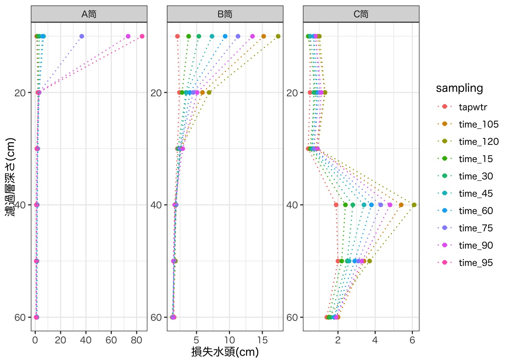
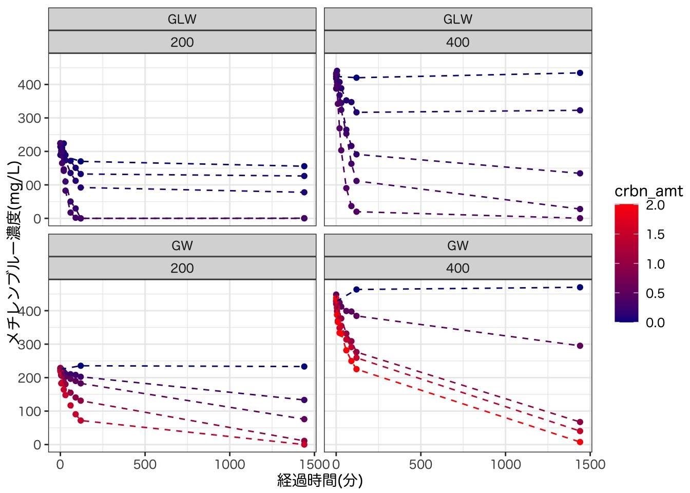
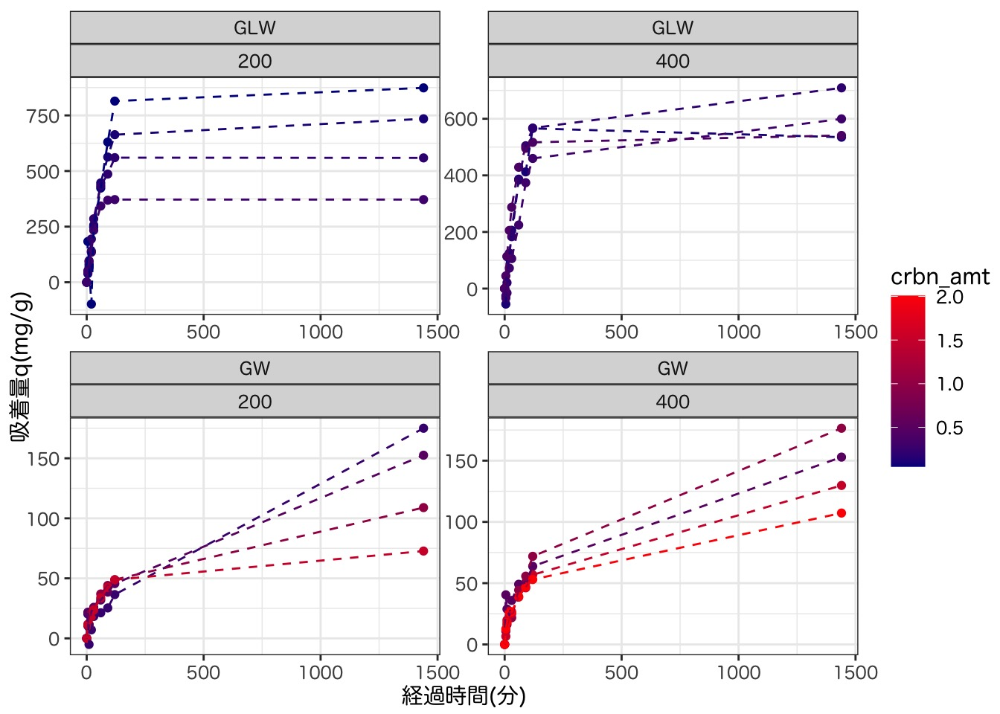
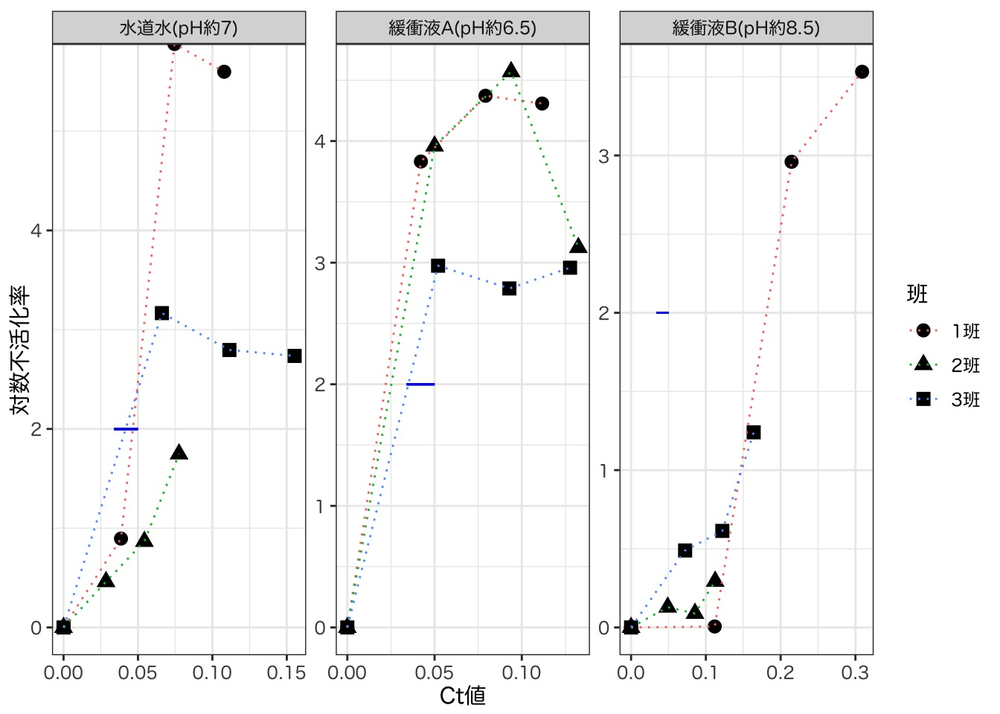
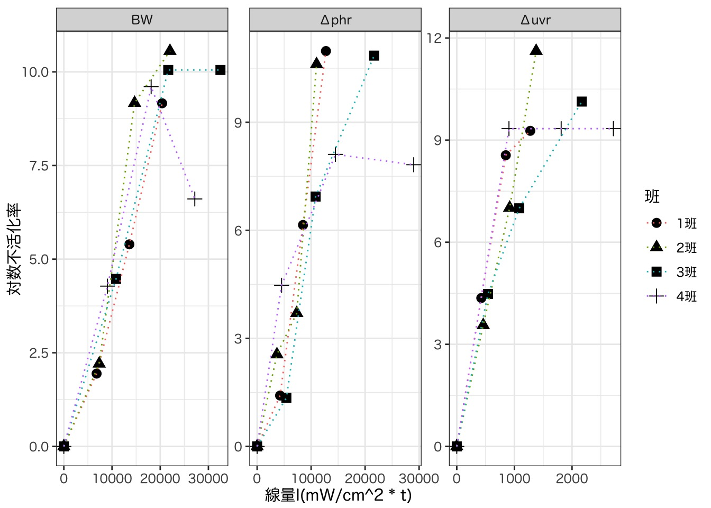
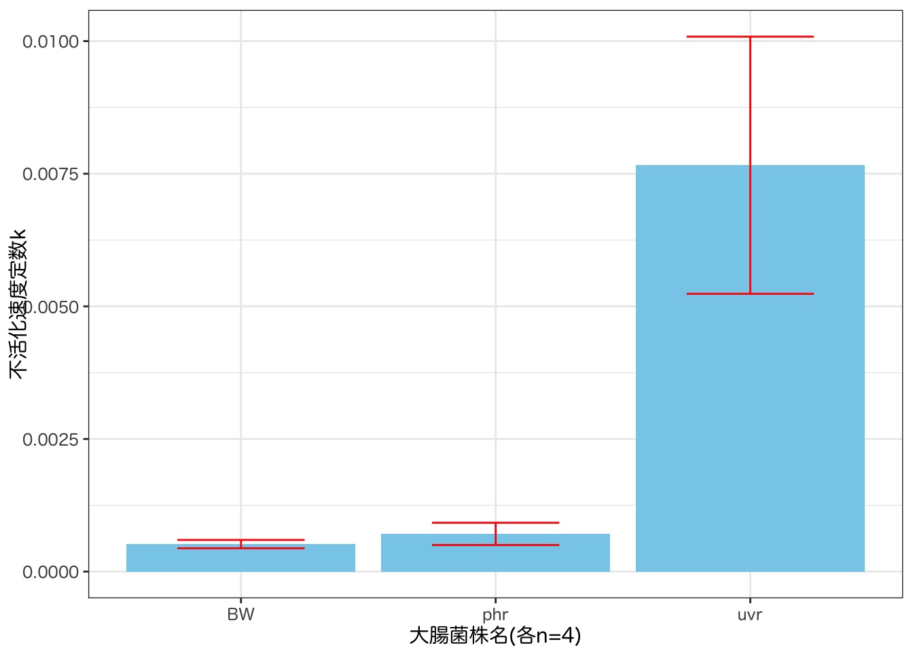

| MB濃度(mg/L) | 665nm吸光度 |
|---|---|
| 0.0 | 0.000 |
| 0.2 | 0.013 |
| 0.5 | 0.031 |
| 1.0 | 0.073 |
| 2.0 | 0.157 |
| 5.0 | 0.352 |
| 10.0 | 0.705 |
| 20.0 | 1.417 |
浄水処理実験 実験レポート
本実験演習の目的
上水実験課題では以下の項目を扱い、浄水処理の物理化学的な原理について定性的・定量的な両面から理解を深めることを目的とする。
凝集沈殿における最適条件の決定
急速濾過における目詰まり状況の解析
オゾンによる有機物分解
活性炭の吸着特性の解析
消毒
塩素消毒
紫外線消毒
課題A オゾンによる有機物分解
実験概要
実験原理
オゾン処理においては、オゾンの強力な酸化力によって高分子の難分解性有機物が酸化分解される。
水中のオゾンの
そこで本実験では、pHがオゾンによる有機物分解に与える影響を調べるため、酸性・中性・アルカリ性の3種類の緩衝溶液にメチレンブルーを一定量加え、オゾン通気を行った。一定時間ごとにオゾン通気中のフラスコから採水を行い、メチレンブルー濃度(2分毎)、TOC濃度、pH、オゾン濃度(最初と最後)の測定を行った。メチレンブルー濃度の測定に当たっては、吸光度法(665nm)を用いた。メチレンブルーは吸着性が高いことから、吸光度測定時には石英セルではなくプラスチックセルを使用し、こまめにMilli-Q水を測定することでセルに吸着していないかを確かめた。溶存オゾン濃度はHACH社の簡易キットを用いてインディゴ法で測定した。TOC濃度測定には島津製作所TOC-Vを使用した。
実験手順
実験の詳細な手順を以下に示す。
予め分光光度計の電源を入れ、内蔵ランプの出力を安定させる
試薬調整
以下の試薬・溶液を調整する。
- pH2, pH7.2, pH12の緩衝溶液
- pH2:
- pH7.2:
- pH12:
- メチレンブルー標準原液(1g/L)
- 緩衝溶液にはこの標準原液を、500mLあたり25mL添加した。
- 検量線の作成
結果の章で示すように、0mg/L~20mg/Lの範囲で標準列を作成した上で、検量線が線形性を保つ範囲のデータを採用した。 - オゾン通気準備(2, 3と同時並行)
オゾン発生器を起動し、3~5分間バイパスで湿気を追い出した。その後、Milli-Q水500mLに5分間通気し、溶存オゾン濃度を測定した。各条件での実験終了後も、同様にMilli-Q水に通気してオゾン濃度を測定することで、オゾン発生器から発生しているオゾン濃度が一定であるかどうかを確認した。 - オゾン処理
実験原水(緩衝溶液500mLにメチレンブルー標準原液25mLを添加)を反応器に入れ、オゾンを通気する。オゾン通気開始直前をt=0とし、2分ごとに採水する。 - 水質分析
採水したサンプルについて、メチレンブルー濃度(全サンプル)、TOC濃度・pH・オゾン濃度(最初と最後のサンプル)を測定する。
結果
まず、メチレンブルー濃度算出に用いる検量線を作成した。各班の実測値を Table 1 に示す。
上記のデータを用いて最小二乗法で検量線を作成したところ、今回採用した希釈段階の全域に渡ってデータは線形な変化であることを確認することができた。検量線モデルは、R言語のlm関数により、吸光度を目的変数、メチレンブルー濃度を説明変数とした線形回帰を行うことにより導出した（以下同様）。

Figure 1 の検量線を用いて、各時刻でのメチレンブルー濃度を算出した。pH・オゾン濃度・TOC濃度の実測値と合わせ、 Table 2 に結果を示す。
検量線法による濃度推定を行うに当たっては、ブランク試料を測定した際の吸光度を下回ったサンプルは「検出限界以下」として扱った。この点について気になり調査したが、一般的にはIUPAC発行の”Compemdium of Chemical Terminology”の記載に則り、 Equation 1 と Equation 2 に示したような定義が用いられるとのことである。(\(※ただし、a: ブランクの平均、\sigma: ブランクの標準偏差\))
\[ LOD(Limit\ of\ Detection) = a + 3\sigma\\ \tag{1}\]
\[ LOQ(Limit\ of\ Quantification) = a + 6\sigma\\ \tag{2}\]
しかしながら、今回の実験演習ではブランクの測定を1回しか行っていないため、ブランク試料の標準偏差を求めることができず、統計学的な検出限界ならびに定量限界を求められない。そこで今回はやむを得ず、1回だけ測定したブランク試料の吸光度を機器のノイズレベルとみなし、ブランク試料の吸光度を下回ったサンプルを定量限界を下回ったサンプルとして処理することにした。本レポートにおいて検量線法を用いている他の実験においても同様の処理を行った。（例： Table 2 に示した計測結果の場合は、ブランクの吸光度は0.000だったため、吸光度の測定結果が負となったサンプルが「測定限界」として表記されている。）
| 時刻(分) |
メチレンブルー濃度測定
|
pH | オゾン濃度(mg/L) | TOC濃度(mg/L) | ||
|---|---|---|---|---|---|---|
| 吸光度 | 希釈倍率 | 濃度(mg/L) | ||||
| 酸性 | ||||||
| 0 | 0.478 | 3 | 20.2 | 2.17 | 1.06 | 16.9 |
| 2 | 0.852 | 2 | 24.1 | - | - | - |
| 4 | 0.001 | 1 | 0.0 | - | - | - |
| 6 | -0.001 | 1 | 定量限界以下 | - | - | - |
| 8 | 0.001 | 1 | 0.0 | - | - | - |
| 10 | -0.004 | 1 | 定量限界以下 | - | - | - |
| 15 | -0.007 | 1 | 定量限界以下 | - | - | - |
| 20 | -0.003 | 1 | 定量限界以下 | 2.11 | 0.83 | 14.5 |
| 中性 | ||||||
| 0 | 1.933 | 3 | 81.9 | 7.00 | 1.06 | 14.6 |
| 2 | 0.354 | 1 | 5.0 | - | - | - |
| 4 | 0.153 | 1 | 2.1 | - | - | - |
| 6 | 0.025 | 1 | 0.3 | - | - | - |
| 8 | -0.001 | 1 | 定量限界以下 | - | - | - |
| 10 | 0.002 | 1 | 0.0 | - | - | - |
| 15 | -0.005 | 1 | 定量限界以下 | - | - | - |
| 20 | -0.002 | 1 | 定量限界以下 | 7.01 | 0.03 | 13.0 |
| アルカリ性 | ||||||
| 0 | 1.739 | 3 | 73.7 | 12.25 | 1.06 | 14.2 |
| 2 | 0.379 | 1 | 5.3 | - | - | - |
| 4 | 0.256 | 1 | 3.6 | - | - | - |
| 6 | 0.140 | 1 | 2.0 | - | - | - |
| 8 | 0.068 | 1 | 0.9 | - | - | - |
| 10 | 0.053 | 1 | 0.7 | - | - | - |
| 15 | 0.017 | 1 | 0.2 | - | - | - |
| 20 | 0.005 | 1 | 0.1 | 11.88 | 0.00 | 10.2 |
酸性のt=0でのサンプルの吸光度の値が、t=2での値よりも小さくなってしまっている。酸性・中性・アルカリ性の各条件について、TOCの値は約15前後で一定しているため、メチレンブルー溶液の投入量を間違えた可能性は低い。従って、吸光度測定の時点で、希釈倍率を間違えるなどの手違いがあったと推測される。
メチレンブルー濃度の時間変化を図示すると Figure 2 のようになった。

考察
結果の章には自分たち(3班)のデータを示したが、
課題B 急速濾過における目詰まり状況と処理性能の解析
実験概要
実験原理
急速濾過法はヨーロッパに比べて水需要が多い上、原水濁度が高いアメリカで発達したプロセスである。急速濾過池においては、硫酸アルミニウムなどを凝集剤としてフロックを形成させ、沈澱池で沈殿させた後、除去しきれなかった微細なフロックが、砂などの粒状濾材を用いて物理化学的に除去される。
本演習では、濾材に原水を通水して濁質を除去する「濾過」と、逆洗浄によって濁質を洗い流す「逆洗」という急速濾過法の2つのプロセスについてモデル実験を行う。原水としてカオリン懸濁液と三四郎池の水、濾材には砂・アンスラサイトを用い、濾過工程におけるろ過抵抗の測定を行う。ろ過抵抗は、濾過筒に接続されたマノメータにより深さごとの損失水頭を求めることで算出する。逆洗工程においては、濾材の下方から水道水を流し、様子を観察するとともに、逆洗水を一定時間ごとに採取してSS濃度を測定する。 また、濾材について、ふるい分けによる粒径決定、仮比重・真比重の測定を行う。
実験手順
実験手順の詳細を以下に示す。
実験機器について
濾過筒の濾材構成
A: 指定砂60cm
B: 指定砂60cm
C: アンスラサイト30cm(上部)⇨指定砂30cm(下部)
凝集剤：硫酸アルミニウム
準備・凝集沈殿操作
濾材の洗浄
水道水を用いて逆洗浄を行う。マノメータの点検
逆洗後、濾過筒に水を満たした状態でマノメータのバルブをすべて開く。水が流れていない状態では損失水頭は0なので、マノメータの高さは水平に揃うはずである。揃っていない場合は気泡が配管に残っている(=気泡による圧力水頭がマノメータの読みに影響を与えている)可能性があるため、マノメータ上部からゴム球で空気を送り込み、気泡を排除する。
その後、濾過筒下部の濾水流出バルブを開き、マノメータの水位が安定した後、マノメータの水位を記録する。この水位は「流出水位」に対応する。原水の作成・凝集沈殿操作
三四郎池の水を採取する。また、濃度が75mg/Lになるように水道水にカオリンを添加し、カオリン原水とする。前者には、実験Aで求めた最適凝集条件の通りに、後者には100mg/L凝集剤を投入し、2分程度、早めの回転数で急速撹拌する。その後、撹拌機の速度を弱め、緩速撹拌する。ポンプの流量調節
それぞれの濾過系統において用いるポンプの流量を、メスシリンダーを用いて流量を実測しながら、約650mL/minになるように調節する。調節後のポンプの流量を記録する。
急速濾過・逆洗浄実験
清水濾過実験
3系統それぞれの濾過筒について、水道水を通水し、単位ろ層厚さあたりの損失水頭を求める。急速濾過実験
まず、原水の濁度・温度を測定する。ポンプを稼働させて原水を通水し、15分間隔でマノメータの水位を記録する。また、30分間隔で原水・濾過水を採取し、濁度を測定する。マノメータの読みに注意し、目詰まりが起こるまで計測を継続する。逆洗浄実験(C筒のみ)
排水バルブ・マノメータバルブを閉じ、水道水により500L/hの流量で逆洗浄を用いる。また、逆洗浄開始時をt=0とし、適当な時間間隔ごとに逆洗排水を採取し、SSを測定する。逆洗終了時には、逆洗用バルブよりも、水道栓を先に閉めるように注意する。
結果
急速濾過
マノメータ水位の変化を Table 3 に示す。
マノメータの読み(cm)
|
||||||||
|---|---|---|---|---|---|---|---|---|
| 1 | 2 | 3 | 4 | 5 | 6 | 7 | 8 | |
| A筒 | ||||||||
| time_15 | 41.7 | 42.9 | 44.2 | 45.6 | 47.4 | 49.8 | 51.6 | 51.6 |
| time_30 | 41.9 | 43.0 | 44.3 | 45.8 | 47.7 | 50.4 | 53.4 | 53.8 |
| time_45 | 41.4 | 42.7 | 43.9 | 45.5 | 47.4 | 50.3 | 56.8 | 56.9 |
| time_60 | 41.0 | 42.1 | 43.3 | 44.7 | 46.7 | 49.7 | 55.3 | 55.6 |
| time_75 | 39.9 | 40.9 | 42.0 | 43.3 | 45.0 | 48.0 | 84.7 | 84.7 |
| time_90 | 38.5 | 39.4 | 40.3 | 41.5 | 43.1 | 45.7 | 119.0 | 119.0 |
| time_95 | 37.5 | 38.2 | 39.0 | 39.9 | 41.2 | 43.7 | 128.0 | 128.0 |
| tapwtr | 42.4 | 43.7 | 45.1 | 46.5 | 48.3 | 50.4 | 51.5 | 51.6 |
| B筒 | ||||||||
| time_15 | 41.8 | 43.3 | 欠測 | 欠測 | 48.9 | 51.7 | 55.6 | 55.4 |
| time_30 | 41.8 | 43.2 | 44.8 | 46.7 | 48.9 | 52.3 | 57.7 | 57.6 |
| time_45 | 41.8 | 43.2 | 44.8 | 46.6 | 49.1 | 52.6 | 60.0 | 59.9 |
| time_60 | 41.7 | 43.1 | 44.7 | 46.5 | 49.1 | 53.1 | 62.5 | 62.4 |
| time_75 | 41.6 | 43.0 | 44.6 | 46.5 | 49.0 | 53.5 | 64.8 | 64.8 |
| time_90 | 41.4 | 42.9 | 44.4 | 46.1 | 49.0 | 54.1 | 67.6 | 67.6 |
| time_105 | 41.5 | 42.8 | 44.5 | 46.4 | 48.9 | 54.8 | 70.0 | 70.0 |
| time_120 | 41.3 | 42.7 | 44.5 | 46.2 | 48.8 | 55.7 | 73.1 | 73.1 |
| tapwtr | 41.6 | 43.2 | 44.7 | 46.4 | 48.5 | 50.9 | 53.0 | 53.0 |
| C筒 | ||||||||
| time_15 | 43.8 | 45.3 | 47.5 | 49.9 | 50.4 | 51.2 | 51.7 | 51.5 |
| time_30 | 43.8 | 45.4 | 47.9 | 50.7 | 51.3 | 52.0 | 52.7 | 52.7 |
| time_45 | 43.6 | 45.4 | 48.0 | 51.4 | 52.0 | 52.9 | 53.4 | 53.4 |
| time_60 | 43.6 | 45.4 | 48.3 | 52.1 | 52.8 | 53.7 | 54.4 | 54.4 |
| time_75 | 43.5 | 45.4 | 48.5 | 52.8 | 53.5 | 54.5 | 55.3 | 55.3 |
| time_90 | 43.4 | 45.3 | 48.6 | 53.4 | 54.3 | 55.4 | 56.2 | 56.2 |
| time_105 | 43.4 | 45.4 | 48.8 | 54.2 | 55.0 | 56.3 | 57.2 | 57.2 |
| time_120 | 43.7 | 45.2 | 48.9 | 55.0 | 55.9 | 57.2 | 58.2 | 58.2 |
| tapwtr | 43.9 | 45.3 | 47.3 | 49.2 | 49.6 | 50.1 | 50.6 | 50.6 |
上記の実測値より、各マノメータごとの、それぞれの濾層(10cm刻み)あたりでの損失水頭を求めた結果を Table 4 に示す。なお、 Table 3 に示した通り、マノメータの7番と8番は濾過プロセス全体を通してほぼ同一の値で水位している。これは、7番と8番のマノメータが濾過層よりも上部に設置されているためである。そこで、6番の損失水頭を求めるに当たっては、7番と8番のマノメータの読みの値の平均値から、6番のマノメータ水位を引くことによって求めた。
| sampling |
濾過による損失水頭(cm)
|
|||||
|---|---|---|---|---|---|---|
| 1 | 2 | 3 | 4 | 5 | 6 | |
| A筒 | ||||||
| time_15 | 1.2 | 1.3 | 1.4 | 1.8 | 2.4 | 1.80 |
| time_30 | 1.1 | 1.3 | 1.5 | 1.9 | 2.7 | 3.20 |
| time_45 | 1.3 | 1.2 | 1.6 | 1.9 | 2.9 | 6.55 |
| time_60 | 1.1 | 1.2 | 1.4 | 2.0 | 3.0 | 5.75 |
| time_75 | 1.0 | 1.1 | 1.3 | 1.7 | 3.0 | 36.70 |
| time_90 | 0.9 | 0.9 | 1.2 | 1.6 | 2.6 | 73.30 |
| time_95 | 0.7 | 0.8 | 0.9 | 1.3 | 2.5 | 84.30 |
| tapwtr | 1.3 | 1.4 | 1.4 | 1.8 | 2.1 | 1.15 |
| B筒 | ||||||
| time_15 | 1.5 | 欠測 | 欠測 | 欠測 | 2.8 | 3.80 |
| time_30 | 1.4 | 1.6 | 1.9 | 2.2 | 3.4 | 5.35 |
| time_45 | 1.4 | 1.6 | 1.8 | 2.5 | 3.5 | 7.35 |
| time_60 | 1.4 | 1.6 | 1.8 | 2.6 | 4.0 | 9.35 |
| time_75 | 1.4 | 1.6 | 1.9 | 2.5 | 4.5 | 11.30 |
| time_90 | 1.5 | 1.5 | 1.7 | 2.9 | 5.1 | 13.50 |
| time_105 | 1.3 | 1.7 | 1.9 | 2.5 | 5.9 | 15.20 |
| time_120 | 1.4 | 1.8 | 1.7 | 2.6 | 6.9 | 17.40 |
| tapwtr | 1.6 | 1.5 | 1.7 | 2.1 | 2.4 | 2.10 |
| C筒 | ||||||
| time_15 | 1.5 | 2.2 | 2.4 | 0.5 | 0.8 | 0.40 |
| time_30 | 1.6 | 2.5 | 2.8 | 0.6 | 0.7 | 0.70 |
| time_45 | 1.8 | 2.6 | 3.4 | 0.6 | 0.9 | 0.50 |
| time_60 | 1.8 | 2.9 | 3.8 | 0.7 | 0.9 | 0.70 |
| time_75 | 1.9 | 3.1 | 4.3 | 0.7 | 1.0 | 0.80 |
| time_90 | 1.9 | 3.3 | 4.8 | 0.9 | 1.1 | 0.80 |
| time_105 | 2.0 | 3.4 | 5.4 | 0.8 | 1.3 | 0.90 |
| time_120 | 1.5 | 3.7 | 6.1 | 0.9 | 1.3 | 1.00 |
| tapwtr | 1.4 | 2.0 | 1.9 | 0.4 | 0.5 | 0.50 |
Table 4 の値について、横軸に単位濾層あたりの損失水頭、縦軸に濾層深さをとってプロットした結果を Figure 3 に示す。

次に、濁度の測定結果を Table 5 に示す。また、濁度の除去率の経時変化を求め、 ?@fig-filt-turb に図示した。
逆洗浄
逆洗時に採水を行い、SSを測定した結果を Table 6 に示す。
| time | bef_g | aft_g | amt_ml | SS |
|---|---|---|---|---|
| 1 | 0.4036 | 0.4116 | 100 | 80 |
| 2 | 0.4000 | 0.4064 | 100 | 64 |
| 3 | 0.4134 | 0.4208 | 100 | 74 |
| 4 | 0.3999 | 0.5724 | 100 | 1,725 |
| 5 | 0.4012 | 0.4637 | 100 | 625 |
| 6 | 0.4069 | 0.4402 | 100 | 333 |
| 7 | 0.4069 | 0.4199 | 100 | 130 |
ろ過筒の仕様測定
ふるい分けの結果を Table 7 に示す。また、粒度加積曲線を ?@fig-sieve に示す。
考察
課題C 活性炭による色度成分の吸着
実験概要
活性炭による色度成分吸着実験
活性炭とは、木質（ヤシ殻、おが屑や石炭など）を原料として、これらの原料を炭化および賦活処理によりつくられた多孔性の炭素質の物質で
その大きな内部表面積や微小細孔により、水中の有機物等を吸着することができる。浄水処理においては、異臭味物質・農薬・微量有害物質・合成洗剤・色度成分・トリハロメタン前駆物質などの除去の目的で活性炭処理が行われている。
本実験演習では、色度成分としてメチレンブルーを溶解した溶液に、クラレコールGLC・クラレコールGWという二種類の活性炭を加えて回分実験を行う。一定時間毎に採水し、色度成分の濃度を測定することで、吸着速度について調べる。また、吸着が平衡に達した際の濃度データをプロットし、吸着等温式を適用することで、吸着等温線に関する理解を深める。
吸着等温線について
ガス吸着による細孔分布解析
Belsorpの原理
私はBELSORPにより出力される「生の吸着等温線データ」にも個人的に興味を持ったので、機器が接続されているPCから元データ格納先のファイルを探し、解析を行った。データ取得に際しては今野さんにご協力頂いた。
結果
検量線の作成
まず、メチレンブルー濃度の推定用の検量線を作成した結果を示す。
複数の希釈列を作成し、665nm吸光度を測定し、全データで検量線を作成した結果を Table 8 ならびに Figure 4 に示す。 なお、私達3班は2日目の測定時に新しく検量線を作成していたが、4班は作成していなかったとのことなので、3種類の検量線データを記載した。また、この場合の各検量線の回帰式とR^2値を Table 9 に示した。
| メチレンブルー濃度(mg/L) |
665nm吸光度
|
||
|---|---|---|---|
| 3班_1 | 3班_2 | 4班_1 | |
| 0.0 | -0.005 | - | - |
| 0.2 | 0.036 | 0.050 | 0.041 |
| 0.5 | 0.102 | 0.112 | 0.115 |
| 1.0 | 0.207 | 0.214 | 0.208 |
| 2.0 | 0.435 | 0.446 | 0.438 |
| 5.0 | 1.051 | 1.043 | 1.055 |
| 10.0 | 1.958 | 1.958 | 1.934 |
| 20.0 | 3.256 | 3.350 | 3.331 |

| 検量線 | 回帰式とR^2値 |
|---|---|
| 3班-1日目 | y = 0.166x + 0.0758, R^2 = 0.9888 |
| 3班-2日目 | y = 0.169x + 0.093, R^2 = 0.9923 |
| 4班-1日目 | y = 0.168x + 0.091, R^2 = 0.9922 |
?@tbl-abs-models に示した通り、R^2値はどれも約0.99となっているものの、これはメチレンブルー濃度が20mg/Lの希釈列に引っ張られた結果であると考えられる。そのため、20mg/Lの希釈列を除いて再度検量線を作成した結果を Figure 5 、 Table 10 に示す。 Figure 4 の検量線よりも正確に線形回帰できているため、この検量線を用いて濃度計算を行う。

| 検量線 | 回帰式とR^2値 |
|---|---|
| 3班-1日目 | y = 0.197x + 0.0131, R^2 = 0.9984 |
| 3班-2日目 | y = 0.195x + 0.029, R^2 = 0.9988 |
| 4班-1日目 | y = 0.194x + 0.0281, R^2 = 0.9978 |
メチレンブルー吸着実験
吸光度の経時変化を
作成した検量線を用いて濃度を計算した結果を Table 12 に示す。なお、4班のデータについては、十分に希釈を行っておらず、検量線が外挿となってしまった場合がある。その場合は数値の横に*をつけて区別した。また、濃度の経時変化を Figure 6 に図示した。
| 活性炭添加量(g) |
メチレンブルー濃度C(mg/L)
|
||||||||
|---|---|---|---|---|---|---|---|---|---|
| 0min | 5min | 10min | 20min | 30min | 60min | 90min | 120min | 24hrs | |
| GW - 400 | |||||||||
| 0.0000 | 427 | - | - | - | - | - | - | 463 | 470 |
| 0.5003 | 448 | 408 | 419 | 424 | 412 | 399 | 398 | 384 | 295 |
| 1.0000 | 420 | 399 | 388 | 376 | 377 | 332 | 309 | 276 | 67 |
| 1.5015 | 430 | 410 | 370 | 348 | 355 | 314 | 291 | 259 | 40 |
| 2.0070 | 438 | 387 | 366 | 334 | 331 | 282 | 250 | 225 | 8 |
| GW - 200 | |||||||||
| 0.0000 | 225 | - | - | - | - | - | - | 235 | 233 |
| 0.2500 | 221 | 211 | 223 | 217 | 212 | 210 | 208 | 203 | 133 |
| 0.4998 | 228 | 207 | 219 | 206 | 203 | 196 | 190 | 183 | 76 |
| 1.0000 | 229 | 208 | 205 | 187 | 180 | 155 | 141 | 131 | 11 |
| 1.5002 | 218 | 183 | 185 | 164 | 148 | 117 | 91 | 72 | 検出限界 |
| GLW - 200 | |||||||||
| 0.0000 | 189 | - | - | - | - | - | - | 170* | 156* |
| 0.0500 | 214 | 196 | 206 | 224 | 189 | 172 | 151 | 133* | 127* |
| 0.1000 | 225 | 217 | 211 | 197 | 173 | 135 | 112 | 92 | 78 |
| 0.2000 | 224 | 203 | 187 | 146 | 110 | 50 | 30 | 検出限界 | 0 |
| 0.3000 | 223 | 195 | 165 | 142 | 83 | 17 | 2 | 検出限界 | 検出限界 |
| GLW - 400 | |||||||||
| 0.0000 | 424 | - | - | - | - | - | - | 420 | 435 |
| 0.1000 | 430 | 441 | 407 | 407 | 389 | 353 | 347 | 317 | 323 |
| 0.2000 | 418 | 428 | 410 | 368 | 345 | 265 | 216 | 191 | 134 |
| 0.3000 | 388 | 408 | 397 | 344 | 324 | 253 | 163 | 112 | 28 |
| 0.4000 | 433 | 397 | 342 | 269 | 203 | 90 | 37 | 20 | 0 |

次に、活性炭への吸着量をy軸にとったグラフを Figure 7 に示す。

次に、平衡濃度Ceと平衡吸着量qeの関係を Figure 8 に示す。なお、平衡濃度と平衡吸着量は、各条件での24時間後のデータを用いて算出した。

Figure 8 に示した吸着平衡時のデータを用いてラングミュア・プロットを行うと Figure 9 のように、点はほぼ直線上に並んだ。

また、フロイントリッヒ・プロットを Figure 10 に示す。

ガス吸着による細孔分布解析
まず、それぞれの活性炭の等温吸着曲線は Figure 11 のようになった。

GW活性炭(浄水処理用)は、ほぼLangmuir型の吸着等温線(IUPACのType Ⅰ)に従っていることがわかる。その一方で、GLC活性炭においては、相対圧が1付近でも吸着量の立ち上がりが見られる。これはIUPACによる分類においてはType Ⅱに近く、単分子吸着の後に多層吸着が起こっていると推測される。また、両者を比較した際、Langmuir型の単分子層吸着領域での吸着量がGW活性炭よりもGLC活性炭の方が多い結果となっている。
次に、Figure 12 に各活性炭のt-plotを示す。t-plotとは、
tの算出には Equation 3 を用いた。
※ここに出典を入れないと駄目。
\[ t = 354(\frac{-5}{ln(P_e/P_0)})^{1/3} \tag{3}\]

また、以下のようなBETプロットを描画することで、表面積を概算することができる。
BETプロットは Equation 4 で表され、直線
※ここにサイトなどで良いので出典を入れる。
\[ BET=P_0 \tag{4}\]
BETプロットが直線形になる範囲において、近似直線を最小二乗法で求めた。近似結果を Figure 13 と Table 13 に示す。なお、直線回帰を行う際に採用するデータの範囲については、今回は暫定的に、Belsorpのデータ分析ソフトウェアから出力された結果と同様のデータ範囲を用いてBETプロットを行った。（分析ソフトウェア内でのデータ選択の根拠までは今回は調べることができなかった。）

Figure 13 に示したBETプロットから、表面積の合計は ?? と求められた。
最後に、MP法による細孔分布の解析を行った。
考察
サンプリングによる影響について
水の蒸発による影響について
吸着等温線の適合性について
活性炭の比表面積と吸着性能について
クラレコールのwebサイトを参照したい
実務の場での活性炭処理について
課題D 凝集沈殿における最適条件の決定
実験概要
概要をここに書く。
結果
まず、二種類の水試料について、凝集剤の濃度を変化させて凝集剤の最適添加量を求めた。実験結果を Table 14 に示す。
なお、m-アルカリ度の測定にあたっては、滴定に用いる0.01mol/L硫酸を…
標定を行った結果、ファクターは (※ここに数値埋め込み) となった。
| 凝集剤(mg/L) | 濁度 | pH | 水温 | mアルカリ度 |
滴定生データ(mL)
|
|
|---|---|---|---|---|---|---|
| 滴下量 | 滴定試料量 | |||||
| 三四郎 | ||||||
| 0 | 6.508 | 7.12 | 11.6 | 44.7 | 4.01 | 100 |
| 10 | 6.512 | 7.18 | 11.6 | 86.1 | 3.86 | 50 |
| 20 | 4.281 | 7.16 | 11.6 | 81.0 | 3.63 | 50 |
| 50 | 1.037 | 7.10 | 11.6 | 70.1 | 3.14 | 50 |
| 75 | 1.175 | 6.40 | 11.6 | 58.9 | 2.64 | 50 |
| 100 | 2.362 | 6.44 | 11.6 | 48.9 | 2.19 | 50 |
| カオリン | ||||||
| 0 | 3.574 | 6.99 | 20.7 | 39.9 | 1.79 | 50 |
| 10 | 3.630 | 7.17 | 20.7 | 36.2 | 1.62 | 50 |
| 20 | 2.134 | 7.00 | 20.7 | 33.0 | 1.48 | 50 |
| 50 | 3.982 | 6.87 | 20.7 | 24.3 | 1.09 | 50 |
| 75 | 5.790 | 6.48 | 20.7 | 10.5 | 0.47 | 50 |
| 100 | 6.949 | 5.90 | 20.7 | 2.9 | 0.13 | 50 |
濁度の除去性能を比較した結果、最適な凝集剤濃度は三四郎池の場合は??、カオリン原水の場合は??であるということがわかった。
次に、上記で求めた最適量だけ凝集剤を添加した条件の下で、pHを酸性~アルカリ性の数段階で変化させ、前後のpH変化ならびに、処理後の濁度・ゼータ電位・水温・m-アルカリ度を計測した結果を Table 15 に示す。なお、pHがおおよそ5よりも小さい条件においてはm-アルカリ度の測定は行っていない。
| pH(前) | pH(後) | 濁度 | ゼータ電位 | 水温 | m-アルカリ度 |
滴定生データ(mL)
|
|
|---|---|---|---|---|---|---|---|
| 滴下量 | 滴定試料量 | ||||||
| 三四郎 | |||||||
| 3.33 | 3.41 | 5.414 | -9.081 | - | - | - | 50 |
| 5.57 | 4.96 | 1.649 | -9.213 | - | - | - | 50 |
| 7.66 | 7.29 | 0.662 | -9.921 | - | 69.0 | 3.09 | 50 |
| 8.88 | 7.62 | 4.241 | -10.440 | - | 79.7 | 3.57 | 50 |
| 10.47 | 9.89 | 1.448 | -13.930 | - | 135.5 | 6.07 | 50 |
| カオリン | |||||||
| 3.88 | 3.48 | 3.679 | -12.770 | 19.3 | - | - | 50 |
| 4.57 | 4.55 | 3.796 | -18.820 | 19.3 | - | - | 50 |
| 7.10 | 7.23 | 3.241 | -10.390 | 19.3 | 32.6 | 1.46 | 50 |
| 8.55 | 7.73 | 2.088 | -17.640 | 19.3 | 37.5 | 1.68 | 50 |
| 10.67 | 10.48 | 3.830 | -15.340 | 19.3 | 114.5 | 5.13 | 50 |
考察
理論上、アルカリ度の減少は以下のようになる。
アルカリ度減少に関する定量的考察
凝集工程の自動化の難しさについて
a
ゼータ電位とジャーテスト結果の比較考察
課題E-1 塩素消毒
実験概要
塩素は注入処理が容易なことや、処理後も残留効果を示すことから、古くから主要な消毒方法として用いられ続けてきた。
塩素は水中では以下の反応を通じて次亜塩素酸 \(HOCl\) ならびに次亜塩素酸イオン\(OCl^-\)を生じ、２つは「遊離塩素」と総称されている。水中で負に帯電している微生物に対しては次亜塩素酸の方が高い殺菌力を持つ。
本実験演習では、水道水ならびにpH6.5・pH8.5の緩衝溶液(塩素添加)に大腸菌を加え、経時的にサンプリングを行って大腸菌濃度を計測することで、遊離塩素の消毒効果について定量的に把握する。遊離塩素濃度に関しては実験前と実験後の2回測定する。
結果
各条件下でのコロニー数の計数結果を Table 16 に示す。以降の考察では他班のデータも参照しているため、すべての班の計数結果について記載した。各サンプルにおける希釈倍率と観測されたコロニー数の関係には齟齬はなく、希釈時操作に関わるミス(希釈溶液の試験管の取り違えなど)は起こっていなかったと推測される。その一方で、4班の結果においては、t=t1以降のほとんどのサンプルにおいて、最小希釈倍率を10^1倍に設定しているにもかかわらず、コロニーが１つも見られない結果となった。この点に関しては、採水後にチオ硫酸ナトリウムを入れ忘れており、塩素が消毒効果を発揮し続けたため、菌が全量不活化されてしまったのではないかと推測される。（4班の人に聞いてみたところ、「入れたはずだけど、よく覚えていない」とのことであった。もしかすると、誤ってMilli-Qなど、チオ硫酸ナトリウムではない溶液の入ったビーカーをチオ硫酸ナトリウムと思い込んで添加していたのかもしれない。）
| 採水時刻 | コロニー数 |
|---|---|
| 1班 - 水道水 | |
| t0 | \textbf{188/209}(×$10^4$), \textbf{14/17}(×$10^5$), \textbf{1/<1}(×$10^6$) |
| t1 | \textbf{>300/>300}(×$10^1$), \textbf{>300/>300}(×$10^2$), \textbf{273/232}(×$10^3$) |
| t2 | \textbf{<1/<1}(×$10^1$), \textbf{<1/<1}(×$10^2$), \textbf{<1/<1}(×$10^3$) |
| t3 | \textbf{1/<1}(×$10^1$), \textbf{<1/<1}(×$10^2$), \textbf{<1/<1}(×$10^3$) |
| 1班 - 緩衝液A | |
| t0 | \textbf{199/249}(×$10^4$), \textbf{15/15}(×$10^5$), \textbf{3/1}(×$10^6$) |
| t1 | \textbf{33/33}(×$10^1$), \textbf{4/3}(×$10^2$), \textbf{1/<1}(×$10^3$) |
| t2 | \textbf{10/9}(×$10^1$), \textbf{<1/2}(×$10^2$), \textbf{<1/<1}(×$10^3$) |
| t3 | \textbf{9/13}(×$10^1$), \textbf{<1/2}(×$10^2$), \textbf{<1/<1}(×$10^3$) |
| 1班 - 緩衝液B | |
| t0 | \textbf{218/194}(×$10^4$), \textbf{16/19}(×$10^5$), \textbf{2/<1}(×$10^6$) |
| t1 | \textbf{>300/>300}(×$10^1$), \textbf{>300/>300}(×$10^2$), \textbf{1979/2083}(×$10^3$) |
| t2 | \textbf{226/226}(×$10^1$), \textbf{17/23}(×$10^2$), \textbf{1/2}(×$10^3$) |
| t3 | \textbf{66/55}(×$10^1$), \textbf{8/5}(×$10^2$), \textbf{1/<1}(×$10^3$) |
| 2班 - 水道水 | |
| t0 | \textbf{276/278}(×$10^4$), \textbf{37/26}(×$10^5$), \textbf{1/4}(×$10^6$) |
| t1 | \textbf{>300/>300}(×$10^1$), \textbf{>300/>300}(×$10^2$), \textbf{1020/896}(×$10^3$) |
| t2 | \textbf{>300/>300}(×$10^1$), \textbf{>300/>300}(×$10^2$), \textbf{379/374}(×$10^3$) |
| t3 | \textbf{>300/>300}(×$10^1$), \textbf{595/450}(×$10^2$), \textbf{27/72}(×$10^3$) |
| 2班 - 緩衝液A | |
| t0 | \textbf{219/227}(×$10^4$), \textbf{20/32}(×$10^5$), \textbf{6/4}(×$10^6$) |
| t1 | \textbf{30/19}(×$10^1$), \textbf{2/5}(×$10^2$), \textbf{<1/1}(×$10^3$) |
| t2 | \textbf{4/8}(×$10^1$), \textbf{1/<1}(×$10^2$), \textbf{2/<1}(×$10^3$) |
| t3 | \textbf{168/167}(×$10^1$), \textbf{12/23}(×$10^2$), \textbf{<1/4}(×$10^3$) |
| 2班 - 緩衝液B | |
| t0 | \textbf{184/209}(×$10^4$), \textbf{18/20}(×$10^5$), \textbf{3/1}(×$10^6$) |
| t1 | \textbf{>300/>300}(×$10^1$), \textbf{>300/>300}(×$10^2$), \textbf{1400/1520}(×$10^3$) |
| t2 | \textbf{>300/>300}(×$10^1$), \textbf{>300/>300}(×$10^2$), \textbf{1600/1600}(×$10^3$) |
| t3 | \textbf{>300/>300}(×$10^1$), \textbf{>300/>300}(×$10^2$), \textbf{1200/800}(×$10^3$) |
| 3班 - 水道水 | |
| t0 | \textbf{>300/>300}(×$10^3$), \textbf{100/91}(×$10^4$), \textbf{7/3}(×$10^5$) |
| t1 | \textbf{8/5}(×$10^2$), \textbf{1/<1}(×$10^3$), \textbf{<1/<1}(×$10^4$) |
| t2 | \textbf{158/148}(×$10^1$), \textbf{16/9}(×$10^2$), \textbf{2/<1}(×$10^3$) |
| t3 | \textbf{178/173}(×$10^1$), \textbf{23/21}(×$10^2$), \textbf{3/1}(×$10^3$) |
| 3班 - 緩衝液A | |
| t0 | \textbf{>300/>300}(×$10^3$), \textbf{87/83}(×$10^4$), \textbf{15/10}(×$10^5$) |
| t1 | \textbf{6/12}(×$10^2$), \textbf{<1/<1}(×$10^3$), \textbf{<1/<1}(×$10^4$) |
| t2 | \textbf{148/129}(×$10^1$), \textbf{25/17}(×$10^2$), \textbf{3/2}(×$10^3$) |
| t3 | \textbf{97/90}(×$10^1$), \textbf{12/8}(×$10^2$), \textbf{3/2}(×$10^3$) |
| 3班 - 緩衝液B | |
| t0 | \textbf{>300/>300}(×$10^3$), \textbf{172/155}(×$10^4$), \textbf{25/18}(×$10^5$) |
| t1 | \textbf{>300/>300}(×$10^2$), \textbf{>300/>300}(×$10^3$), \textbf{62/44}(×$10^4$) |
| t2 | \textbf{>300/>300}(×$10^1$), \textbf{>300/>300}(×$10^2$), \textbf{432/364}(×$10^3$) |
| t3 | \textbf{>300/>300}(×$10^1$), \textbf{>300/>300}(×$10^2$), \textbf{109/79}(×$10^3$) |
| 4班 - 水道水 | |
| t0 | \textbf{176/184}(×$10^4$), \textbf{20/40}(×$10^5$), \textbf{4/4}(×$10^6$) |
| t1 | \textbf{<1/<1}(×$10^2$), \textbf{<1/<1}(×$10^3$), \textbf{<1/<1}(×$10^4$) |
| t2 | \textbf{<1/<1}(×$10^1$), \textbf{<1/<1}(×$10^2$), \textbf{<1/<1}(×$10^3$) |
| t3 | \textbf{<1/<1}(×$10^1$), \textbf{<1/<1}(×$10^2$), \textbf{<1/<1}(×$10^3$) |
| 4班 - 緩衝液A | |
| t0 | \textbf{>300/>300}(×$10^4$), \textbf{40/44}(×$10^5$), \textbf{7/4}(×$10^6$) |
| t1 | \textbf{16/3}(×$10^2$), \textbf{2/<1}(×$10^3$), \textbf{<1/<1}(×$10^4$) |
| t2 | \textbf{<1/<1}(×$10^1$), \textbf{<1/<1}(×$10^2$), \textbf{<1/<1}(×$10^3$) |
| t3 | \textbf{1/<1}(×$10^1$), \textbf{<1/<1}(×$10^2$), \textbf{1/1}(×$10^3$) |
| 4班 - 緩衝液B | |
| t0 | \textbf{145/137}(×$10^4$), \textbf{6/17}(×$10^5$), \textbf{3/2}(×$10^6$) |
| t1 | \textbf{<1/<1}(×$10^2$), \textbf{<1/<1}(×$10^3$), \textbf{<1/<1}(×$10^4$) |
| t2 | \textbf{<1/<1}(×$10^1$), \textbf{<1/<1}(×$10^2$), \textbf{<1/<1}(×$10^3$) |
| t3 | \textbf{<1/<1}(×$10^1$), \textbf{<1/<1}(×$10^2$), \textbf{<1/<1}(×$10^3$) |
次に、実験前後での遊離塩素濃度の測定結果、塩素消費における一次反応速度定数k’の推定値ならびに、実験での実際の採水時刻t1~t3を Table 17 に示す。
| 溶液 |
遊離塩素濃度(mg/L)
|
採水時刻(s)
|
k'(/min) | ||||
|---|---|---|---|---|---|---|---|
| 実験前 | 実験後 | 測定時刻(s) | t1 | t2 | t3 | ||
| 1班 | |||||||
| 水道水 | 0.24 | 0.18 | 40 | 10 | 20 | 30 | 4.3 × 10−1 |
| 緩衝液A | 0.27 | 0.16 | 40 | 10 | 20 | 30 | 7.8 × 10−1 |
| 緩衝液B | 0.35 | 0.26 | 70 | 20 | 40 | 60 | 2.5 × 10−1 |
| 2班 | |||||||
| 水道水 | 0.18 | 0.12 | 40 | 10 | 20 | 30 | 6.1 × 10−1 |
| 緩衝液A | 0.32 | 0.19 | 40 | 10 | 20 | 30 | 7.8 × 10−1 |
| 緩衝液B | 0.17 | 0.06 | 70 | 20 | 40 | 60 | 8.9 × 10−1 |
| 3班 | |||||||
| 水道水 | 0.29 | 0.25 | 44 | 14 | 24 | 34 | 2.0 × 10−1 |
| 緩衝液A | 0.25 | 0.19 | 44 | 13 | 24 | 34 | 3.7 × 10−1 |
| 緩衝液B | 0.20 | - | 90 | 24 | 44 | 64 | - |
| 4班 | |||||||
| 水道水 | 0.30 | 0.26 | 44 | 10 | 24 | 34 | 2.0 × 10−1 |
| 緩衝液A | 0.20 | 0.11 | 41 | 11 | 21 | 31 | 8.7 × 10−1 |
| 緩衝液B | 0.21 | 0.13 | 71 | 21 | 41 | 61 | 4.1 × 10−1 |
塩素の初期濃度と終濃度から推定した塩素分解の一次反応速度定数k’の値を元に各時刻でのCt値を算出し、Ct値と対数不活化率の関係を Figure 14 にプロットした。先述の通り、4班は実験操作過程において何等かの不手際があったと考えられるため、以降の解析から除外した。3班の緩衝液BのCt値算出にあたっては、終塩素濃度の測定を忘れてしまったため、他の班の緩衝液Bにおけるk’の平均値(n=3)で代替した。また、WHOの指針によれば、pH6〜7、水温5°Ｃの場合、遊離塩素で大腸菌を2log不活化するのに必要なCt値は0.034-0.05(mg/L*min)とされていることを踏まえ、該当する不活化率・Ct値の範囲をグラフ上に青の線分で示した。

水道水に関しては、1班は時刻t2の時点で菌がほぼ全量不活化、2班は全域でほぼ線形に不活化率が変化しているのに対し、3班は時刻t1まで他2班とほぼ同水準で不活化が起こった後、テーリングが起こっている。緩衝液Aは、3班ともに、時刻t1まではほぼ同程度で不活化した後、時刻t2以降でテーリングが生じている。緩衝液Bについては、1班はt=t1の時点で一切不活化が起こっていない点が不可解である。t=t2以降は不活化していることを踏まえると、大腸菌が凝集していた、撹拌が十分に行われなかったなどの理由により、塩素との接触が十分に行われていなかったと考えられる。その一方で、大腸菌の凝集だけでは、時刻t2以降は3log以上の水準で一気に不活化が起こっていることが説明できない。この現象に関して、何等かの科学的に説明可能な理由が存在する可能性は否定できない。しかしながら今回は、時刻t1で一切不活化していない時点で、時刻t=0から塩素濃度が一次反応に従って分解するという今回の反応モデルを1班の実験データには適用することができないと判断し、緩衝液Bにおける不活化速度定数ｋの計算では1班のデータを除いて考えることとした。
以上の議論より、不活化反応速度定数kは、以下のような基準で計算を行った。
水道水：3班が時刻t2からテーリングを生じているため、全体の回帰直線を求めることは適切ではない。従って、すべての班について、時刻t0・t1の2点を結ぶ直線の傾きをkの推定値として統一する。
緩衝液A：3班とも時刻t2以降でテーリングが生じているため、水道水と同様に、原点と時刻t1の点を結ぶ直線の傾きを採用する。
緩衝液B：先述の理由から、1班のデータは採用しない。2・3班のデータはどちらも、全時刻を通してほぼ対数不活化率は単調に増加している。そのため、2班それぞれのデータについて、原点・t1・t2・t3の4点から回帰直線を導出し、その傾きをkの推定値とする。
以上の基準で不活化速度定数kを算出した結果を Table 18 に示す。また、3条件での不活化速度定数の比較を Figure 15 に示す。各条件について、棒グラフは平均値、エラーバーは標準偏差を示している。
| 1 | 2 | 3 |
|---|---|---|
| 水道水 | ||
| 2.3 × 101 | 1.6 × 101 | 4.8 × 101 |
| 緩衝液A | ||
| 9.1 × 101 | 7.9 × 101 | 5.7 × 101 |
| 緩衝液B | ||
| NA | 2.2 | 7.0 |

いくつか実験結果を除外した結果であるので参考程度の扱いではあるが、今回の計算方法のもとでは、すべての条件について統計的に有意な差が認められる結果となった。
考察
まず実験データの完全性については、緩衝液Bにおいて、t=t3での採水後の塩素濃度測定を忘れてしまった。これは、「最初と最後の時点での塩素濃度を測定することにより、一次反応の反応速度定数k’を測定する」という実験のパラメータ計算の流れを完全に理解できていなかったことが原因である。今後は実験の設計・計画を完全に理解した上で実験に臨む習慣をつけたいと思う。
次亜塩素酸・次亜塩素酸イオンの理論存在比率
HOClのpKaは7.5なので Equation 5 が成り立つ。
\[ \frac{[H^+][OCl^-]}{[HOCl]} = 10^{-7.5} \tag{5}\]
従って、緩衝液A、Bにおける水素イオン濃度(それぞれ \(10^{-6.5}, 10^{-8.5}\))を代入すると、Aにおける存在比はHOCl : OCL- = 10:1、Bでは1:10と求まる。
HOClとOCl-の不活化能力の違い
各緩衝液におけるkの平均値は、Aで\(2.9 \times 10^1\)、Bで\(4.6\)となった。k=kHOCl + kOCl- と仮定した場合、HOClの不活化能力がOCl-のa倍とすると Equation 6 が成り立つ。この式を解くとaは17となり、HOClの不活化能力はOCl-の17倍高いことがわかる。
\[ \frac{10a+1}{a+10} = \frac{290}{46} \tag{6}\]
実務におけるCt値のコントロール
緩衝液Bにおける不活化速度定数4.6 より、今回用いた大腸菌株において90%、99% 、99.9%の不活化を達成するにはそれぞれ、 0.22、 0.44、 0.66 のCt値を与える必要がある（生存率10%を1logの不活化として考えた）。
実務におけるCt値の制御について考察するにあたり、金町浄水場や東村山浄水場などの大規模浄水場での塩素接触池の水理学的滞留時間と注入塩素濃度を調査しようと思ったが、資料を見つけることができなかった。従って、いくつか数値を仮定して概算してみたい。
東京都水道局では、広い地域を対象として配水を行うにあたり、浄水場の付近で蛇口での残留塩素濃度が高くなってしまうことを防ぐために、給水所での追加塩素注入を行い、浄水場での注入塩素濃度を減らしている。この事実を鑑み、浄水場での塩素注入ですべての病原微生物を不活化することを目指すよりは、送配水を含めた水道システム全体での水質管理の観点から考えた方が良いのではないかと考えた。そこで、今回は配水所において大腸菌が残存していた場合、どれだけの消毒効果が得られるのかを概算してみることにした。
配水池での水理学的滞留時間を12時間、残留塩素濃度を水道水質基準の上限値である0.4mg/Lで一定と仮定すると、Ct値は\(2.9 \times 10^2\)となり、今回用いた大腸菌株を99.9%不活化することが十分に可能であるとわかる。また、浄水場から配水所までの送水や、配水所から家庭まで配水の間にも、残留塩素による消毒効果が持続していると考えられ、さらに不活化は進行すると考えられる。以上のような試算から、水道水質基準におけるpHの上限値に近いpH8.5の状態であった場合でも十分な消毒効果が得られ、水道水の微生物学的安全性が保たれるようにインフラが設計されていることがわかる。
塩素感受性の株間多様性の考慮
Ct値と速度定数kを用いると、大腸菌集団全体としての生存率は Equation 7 で表される。
\[ 生存率S_{all} = 0.98\cdot 10^{-Ct\cdot k}+0.01\cdot 10^{-30Ct\cdot k}+0.01\cdot 10^{\frac{Ct\cdot k}{30}} \tag{7}\]
この生存率の常用対数の絶対値が全体としての対数不活化率となる。不活化率が1、2、3となるCt値を求めたい。解析的に求解することは難しいため、まずはグラフを描画すると Figure 16 のようになる。

対数不活化率1、2、3を達成するCt値を、R言語のuniroot関数を用いて求めると、それぞれ 0.22 、 0.59、 6.5となった。 (3)で計算したCt値がそれぞれ 0.22、 0.44、 0.66 であったことを踏まえると、不活化率が2logまでであれば必要なCt値はあまり変わらないものの、3log以降は不活化曲線の傾きが小さくなり、必要なCt値がオーダーレベルで変化することがわかる。
このように、塩素消毒耐性を持つ菌株が1%混入しただけでも、全体としての不活化率には大きな影響が及ぼされることがわかる。
課題E-2 紫外線消毒
実験概要
結果
各条件下でのコロニー数の計数結果を Table 19 に示す。塩素消毒実験時と同じく、各サンプルにおける希釈倍率とコロニー数の関係は一致しており、希釈操作は正しく行われたと推測される。
| 採水時刻 | コロニー数 |
|---|---|
| 1班 - BW | |
| t0 | \textbf{>300/>300}(×$10^2$), \textbf{246/230}(×$10^3$), \textbf{15/19}(×$10^4$) |
| t1 | \textbf{>300/>300}(×$10^1$), \textbf{341/340}(×$10^2$), \textbf{28/33}(×$10^3$) |
| t2 | \textbf{167/>300}(×$10^0$), \textbf{105/111}(×$10^1$), \textbf{9/14}(×$10^2$) |
| t3 | \textbf{<1/<1}(×$10^0$), \textbf{3/2}(×$10^1$) |
| 1班 - phr | |
| t0 | \textbf{>300/>300}(×$10^2$), \textbf{57/60}(×$10^3$), \textbf{2/5}(×$10^4$) |
| t1 | \textbf{>300/>300}(×$10^1$), \textbf{146/139}(×$10^2$), \textbf{17/9}(×$10^3$) |
| t2 | \textbf{<1/<1}(×$10^0$), \textbf{12/13}(×$10^1$), \textbf{5/2}(×$10^2$) |
| t3 | \textbf{<1/<1}(×$10^0$), \textbf{<1/<1}(×$10^1$) |
| 1班 - uvr | |
| t0 | \textbf{>300/>300}(×$10^2$), \textbf{107/106}(×$10^3$), \textbf{4/8}(×$10^4$) |
| t1 | \textbf{125/147}(×$10^1$), \textbf{13/15}(×$10^2$), \textbf{1/4}(×$10^3$) |
| t2 | \textbf{17/24}(×$10^0$), \textbf{3/4}(×$10^1$), \textbf{<1/1}(×$10^2$) |
| t3 | \textbf{2/<1}(×$10^0$), \textbf{1/1}(×$10^1$) |
| 2班 - BW | |
| t0 | \textbf{96/96}(×$10^3$), \textbf{6/8}(×$10^4$), \textbf{<1/3}(×$10^5$) |
| t1 | \textbf{101/110}(×$10^2$), \textbf{9/13}(×$10^3$), \textbf{1/<1}(×$10^4$) |
| t2 | \textbf{<1/<1}(×$10^1$), \textbf{<1/<1}(×$10^2$), \textbf{<1/<1}(×$10^3$) |
| t3 | \textbf{3/2}(×$10^0$), \textbf{<1/<1}(×$10^1$), \textbf{<1/<1}(×$10^2$) |
| 2班 - phr | |
| t0 | \textbf{44/37}(×$10^3$), \textbf{5/3}(×$10^4$), \textbf{1/<1}(×$10^5$) |
| t1 | \textbf{31/32}(×$10^2$), \textbf{<1/<1}(×$10^3$), \textbf{<1/<1}(×$10^4$) |
| t2 | \textbf{3/<1}(×$10^1$), \textbf{1/<1}(×$10^2$), \textbf{1/<1}(×$10^3$) |
| t3 | \textbf{<1/<1}(×$10^0$), \textbf{<1/<1}(×$10^1$), \textbf{<1/<1}(×$10^2$) |
| 2班 - uvr | |
| t0 | \textbf{116/106}(×$10^3$), \textbf{10/5}(×$10^4$), \textbf{1/1}(×$10^5$) |
| t1 | \textbf{31/32}(×$10^2$), \textbf{<1/1}(×$10^3$), \textbf{<1/<1}(×$10^4$) |
| t2 | \textbf{3/<1}(×$10^1$), \textbf{1/<1}(×$10^2$), \textbf{1/<1}(×$10^3$) |
| t3 | \textbf{<1/<1}(×$10^0$), \textbf{<1/<1}(×$10^1$), \textbf{<1/<1}(×$10^2$) |
| 3班 - BW | |
| t0 | \textbf{>300/>300}(×$10^1$), \textbf{>300/>300}(×$10^2$), \textbf{278/185}(×$10^3$), \textbf{25/18}(×$10^4$) |
| t1 | \textbf{271/258}(×$10^1$), \textbf{35/30}(×$10^2$), \textbf{5/3}(×$10^3$) |
| t2 | \textbf{<1/<1}(×$10^1$), \textbf{1/<1}(×$10^2$), \textbf{<1/<1}(×$10^3$) |
| t3 | \textbf{<1/<1}(×$10^1$), \textbf{<1/<1}(×$10^2$), \textbf{<1/<1}(×$10^3$) |
| 3班 - phr | |
| t0 | \textbf{>300/>300}(×$10^1$), \textbf{>300/>300}(×$10^2$), \textbf{>300/>300}(×$10^3$), \textbf{57/46}(×$10^4$) |
| t1 | \textbf{>300/>300}(×$10^1$), \textbf{>300/>300}(×$10^2$), \textbf{161/107}(×$10^3$) |
| t2 | \textbf{51/49}(×$10^1$), \textbf{7/3}(×$10^2$), \textbf{1/<1}(×$10^3$) |
| t3 | \textbf{<1/<1}(×$10^1$), \textbf{<1/<1}(×$10^2$), \textbf{<1/<1}(×$10^3$) |
| 3班 - uvr | |
| t0 | \textbf{>300/>300}(×$10^1$), \textbf{>300/>300}(×$10^2$), \textbf{259/244}(×$10^3$), \textbf{30/28}(×$10^4$) |
| t1 | \textbf{>300/253}(×$10^1$), \textbf{31/26}(×$10^2$), \textbf{4/3}(×$10^3$) |
| t2 | \textbf{40/6}(×$10^1$), \textbf{<1/<1}(×$10^2$), \textbf{<1/<1}(×$10^3$) |
| t3 | \textbf{<1/<1}(×$10^1$), \textbf{<1/<1}(×$10^2$), \textbf{<1/<1}(×$10^3$) |
| 4班 - BW | |
| t0 | \textbf{>300/>300}(×$10^5$), \textbf{141/155}(×$10^6$), \textbf{19/16}(×$10^7$) |
| t1 | \textbf{218/>300}(×$10^4$), \textbf{29/12}(×$10^5$), \textbf{3/<1}(×$10^6$) |
| t2 | \textbf{<1/<1}(×$10^4$), \textbf{<1/<1}(×$10^5$) |
| t3 | \textbf{<1/<1}(×$10^4$), \textbf{1/3}(×$10^5$) |
| 4班 - phr | |
| t0 | \textbf{>300/>300}(×$10^5$), \textbf{230/268}(×$10^6$), \textbf{26/28}(×$10^7$) |
| t1 | \textbf{268/300}(×$10^4$), \textbf{30/17}(×$10^5$), \textbf{2/4}(×$10^6$) |
| t2 | \textbf{7/8}(×$10^4$), \textbf{2/2}(×$10^5$) |
| t3 | \textbf{<1/<1}(×$10^4$), \textbf{1/<1}(×$10^5$) |
| 4班 - uvr | |
| t0 | \textbf{252/>300}(×$10^5$), \textbf{107/120}(×$10^6$), \textbf{10/3}(×$10^7$) |
| t1 | \textbf{1/<1}(×$10^4$), \textbf{<1/<1}(×$10^5$), \textbf{<1/<1}(×$10^6$) |
| t2 | \textbf{<1/<1}(×$10^4$), \textbf{<1/<1}(×$10^5$) |
| t3 | \textbf{1/<1}(×$10^4$), \textbf{<1/<1}(×$10^5$) |
次に、実験前に計測したシャーレ上側の線量率、試料の吸光度から、反応容器内の平均線量率を算出した。実験当日の採取時刻t1~t3と併せ、Table 20 に示した。容器内の平均線量率についても計算を行っている。
平均線量率は、Lambert-Beerの法則( Equation 8 )を0からLまで定積分し、Lで割って得られる Equation 9 を用いて計算した。
\[ I = I_0 \cdot 10^{-A\cdot L} \tag{8}\]
\[ \begin{aligned} \frac{1}{L} \int_{0}^{L}I_0 \cdot 10^{-A \cdot L'}dL' &=\frac{I_0}{L}(-\frac{1}{Alog10})[10^{-AL'}]_0^L\\ &=\frac{I_0}{ALlog10}(1-10^{-AL}) \end{aligned} \tag{9}\]
採水時刻(s)
|
透過前の紫外線線量率(mW/cm^2)
|
吸光度 | 平均線量率 | ||||||||
|---|---|---|---|---|---|---|---|---|---|---|---|
| t1 | t2 | t3 | 1回目 | 2回目 | 3回目 | 4回目 | 5回目 | 平均 | |||
| 1 班 | |||||||||||
| BW | 80 | 160 | 240 | 77.3 | 78.7 | 85.2 | 87.1 | 99.7 | 85.60 | 0.009 | 84.99 |
| phr | 50 | 100 | 150 | 同上 | 0.009 | 84.99 | |||||
| uvr | 5 | 10 | 15 | 同上 | 0.008 | 85.06 | |||||
| 2 班 | |||||||||||
| BW | 80 | 160 | 240 | 84.8 | 87.5 | 92.8 | 94.8 | 102.1 | 92.40 | 0.009 | 91.74 |
| phr | 40 | 80 | 120 | 同上 | 0.009 | 91.74 | |||||
| uvr | 5 | 10 | 15 | 同上 | 0.008 | 91.82 | |||||
| 3 班 | |||||||||||
| BW | 100 | 200 | 300 | 109.8 | 109.4 | 109.5 | 109.8 | 107.0 | 109.10 | 0.009 | 108.33 |
| phr | 50 | 100 | 200 | 同上 | 0.009 | 108.33 | |||||
| uvr | 5 | 10 | 20 | 同上 | 0.008 | 108.41 | |||||
| 4 班 | |||||||||||
| BW | 100 | 200 | 300 | 64.8 | 85.4 | 96.3 | 102.8 | 106.5 | 91.16 | 0.008 | 90.58 |
| phr | 50 | 160 | 320 | 同上 | 0.007 | 90.66 | |||||
| uvr | 10 | 20 | 30 | 同上 | 0.008 | 90.58 | |||||
計算した平均線量率を用いて各時刻での線量Iを算出し、大腸菌の不活化率との関係をプロットすると Figure 17 のようになる。なお、対数不活化率を求めるにあたり、コロニーが全く見られなかった場合には対数不活化率が正の無限大となってしまうため、“<1”の場合は便宜的に”コロニー数1”と置き換えて作図を行った。

遺伝子欠損のないBW25113株では、全ての班において不活化曲線はほぼ直線形になり、2班・3班・4班では、時刻t3までにほぼ全量が不活化されている。また、4班の時刻t3の不活化率の減少に関しては、紫外線照射処理後に蛍光灯照明下で回復が起こったのではないかと考えられる。Δphr株では、4班でテーリングが生じている以外は、ほぼ線形な変化となっている。Δuvr株では、4班は時刻t2の時点でほぼ全量が不活化されている一方、時刻t3では微量ながら大腸菌が検出されており、光回復の可能性が示唆される。4班以外では、ほぼ線形に変化している。
以上の議論から、マルチヒットモデルにおいてn=1とした場合の不活化速度定数k(cm^2/mJ)を、以下のような方法で推定した。
BW25113株：2〜4班のデータについては、原点、t1、t2の3点の回帰直線の傾きを求める。1班のデータについては、4点全てを用いる。
Δphr株：テーリングが生じた4班は原点、t1、t2の3点を用いる。その他の班は4点全てを用いる。
Δuvr株：4班は原点とt1の2点の傾きを用いる。その他は4点全てを用いる。
以上の方法でn=1と仮定した場合のkを算出した結果を Table 21 に示す。また、3株での不活化速度定数の比較を Figure 18 に示す。塩素消毒実験の時と同様、エラーバーは各条件におけるkの標準偏差を示している。
| 1班 | 2班 | 3班 | 4班 |
|---|---|---|---|
| BW | |||
| 4.6 × 10−4 | 6.3 × 10−4 | 4.6 × 10−4 | 5.3 × 10−4 |
| phr | |||
| 8.9 × 10−4 | 9.0 × 10−4 | 5.3 × 10−4 | 5.3 × 10−4 |
| uvr | |||
| 7.5 × 10−3 | 8.3 × 10−3 | 4.5 × 10−3 | 1.0 × 10−2 |

Δuvr株の場合の不活化速度定数が、他の2条件に比べて有意に大きくなったのに対し、今回の実験条件においてはBW25113株とΔphr株の間には有意差は見られなかった。
考察
マルチヒットモデルのパラメータnについて
今回の実験では全班において、紫外線照射操作の全班では、線量と対数不活化率の間にはほぼ線形な関係が観測されており、大腸菌は構造が単純であるとしてn=1と仮定したモデルに良く当てはまっているといえる。
一方で、
不活化プロファイルの違いについて
まず、4班すべてにおいて、塩素消毒実験と比べて
今回の実験ではΔuvrの不活化速度定数が、他の2株に比べて大きくなった。これは、今回の実験における大腸菌の回復において、暗回復の影響が大きかったということを示唆してする結果である。その一方で、BW25113株とΔphr株の不活化速度定数については、Δphr株の定数の平均値の方が大きかったものの、統計的に有意な差は見られなかった。これは、今回の実験においては明回復は不活化プロファイルに、あまり大きな影響は及ぼしていないということを意味している。
今回の実験では、採水から培養開始までの蛍光灯照明下での作業時間は、大きく見積もっても1時間ほどであったのに対し、蛍光灯照明が届きにくい環境での培養が24時間かけて行われている。この間に暗回復が起こっていたのではないかと考えられる。
不活化機構の研究のために必要な実験の提案
バイオインフォマティクス分野で活用が進む新技術の「ロングリード・シーケンサー」（ナノポアシーケンサー）を用いれば、紫外線照射によってチミン二量体が形成される様子が分子レベルで解析できると考えた。
具体的には、今回の実験のように一定時間紫外線を照射した後、培養と同時に大腸菌サンプルから核酸を抽出し、ナノポアシーケンサーによるロングリードシーケンシングを行う。前処理においては、DNA鎖を破壊しないような前処理の方法が求められる。その後、得られたサンプルをローングリード・シーケンシングにより解析する。波形データはDORADOなどの通常のベースコールソフトウェアで処理せずに、波形そのものを、UV非照射の菌株の配列データと比較するなどの工夫が必要となるだろう。同時に、ベースコール・アセンブリなどのバイオインフォマティクス解析を行い、チミン二量体の発生場所の予測データと照らし合わせることで、「どこの遺伝子の損傷が不活化に関与しているのか」を知ることができると考えられる。
ただ、全ゲノム解析という実験手法の性質上、PCR法などと比べて定量性が犠牲となるため、「どこが変異しているか」を調べるだけの、定性的な研究に終わってしまうという懸念点もある。
紫外線不活化に影響を与える因子・実務への提言
今回の実験条件においては、暗回復の影響が大きかった。暗回復は、特に上水処理において問題になるだろう。
PFAS分解における紫外線処理の利用について
ウシオ電機が、紫外線を照射することにより水中にラジカルを発生させ、長鎖PFAS・PFOAを分解するという技術を開発していることを、昨年の1月にInterAquaという展示会に行った際に知った。PFAS・PFOA問題について、吸着後の活性炭の処理が問題とされている(現時点では、貯蔵か焼却以外に選択肢がない)中、先進的な技術として注目されているようだが、まだ実証実験段階であるとのことである。
この手法は、未だに解決策の見つからないPFASの分解技術として有望であるが、ラジカルを発生させるためには、波長172nmの光を発する「エキシマランプ」が必要になる。今回、消毒用に用いた紫外線の波長(254nm)よりも短波長の紫外線ランプということで、エキシマランプは浄水用のランプに比べて高価である。そのため、環境浄化技術として実用化を目指す上では、コスト削減が鍵になると考えられる。
実験課題Eを通した考察
塩素処理と紫外線処理にはそれぞれ利点と欠点がある。塩素消毒は塩素注入が容易であること、効果が確実かつ残留塩素により消毒効果が持続するといった利点がある一方で、塩素が水中の溶存有機物と反応することによってトリハロメタンを生成するという欠点がある。紫外線消毒は消毒副生成物を生じないという利点があるものの、塩素消毒とは異なり消毒効果には残留性がない。また、懸濁物質が存在する場合は消毒効果が低下してしまうという欠点もある。
健康関連微生物の水循環システムにおける制御にあたっては、上水プロセスでの問題にとどまらず、より広い観点に立った施策展開が行われることが望まれる。例えば、上水道と下水道の行政上の連携が必要であると私は考える。水環境中に放出される健康関連微生物の多くは、下水処理場から処理水として放出されたものに由来する。そのため、浄水場での消毒の必要性を最低限に減らすためには浄水処理だけではなく、下水処理も視野に入れて考える必要がある。具体的には、上流に下水処理場、下流に浄水場が分布している水系においては、下水処理場の運転状況(BOD除去率、排水の微生物指標など)を下流の浄水場に共有し、互いの運転の最適化に役立てるなどの工夫が考えられる。
次に、病原微生物による感染リスクと消毒副生成物による発がんリスクのトレードオフに関しては、特にアメリカや日本、欧州などの先進国においては20世紀後半から、定量的なリスク評価に基づいた意思決定を重んじる考え方が学識経験者によって主張されてきたにもかかわらず、現在でもリスクの考え方は、市民には正しく理解されていないのが現状であると考えられる。上下水道以外の分野の具体例にはなるが、ワクチン接種問題やPFAS汚染問題など、生命に係るリスクが少しでもある場合には、近年のSNSによる意見の拡散の速さも相まって、定性的で感情的な議論に陥る場合が少なくない。
このような状況の中で、定量的なリスク評価に基づく政策議論が行われるためには、まず、上下水道とは公衆衛生のためのインフラであるという認識を市民・政治家に浸透させることが大事であろう。科学的に考えて、消毒副生成物による発がんリスクよりも、消毒を行わないことによる感染リスクの方が数桁レベルで大きいことは明らかである。また、欧州式の塩素低減型水道システムの導入も積極的に検討すべきであるものの、既存の設備のみでは対応ができないため、導入には相応の予算が必要となる。管路網更新や耐震化などが喫緊の課題とされている中で新技術を導入するには、水道事業そのものに関する市民の理解を深め、新技術導入の意義について合意を得ることがまず、最も重要になるのではないだろうか。
付録 他班のデータ
考察において他班のデータを参照したため、全班の生データ比較が可能なよう、以下に全班のデータを示す。